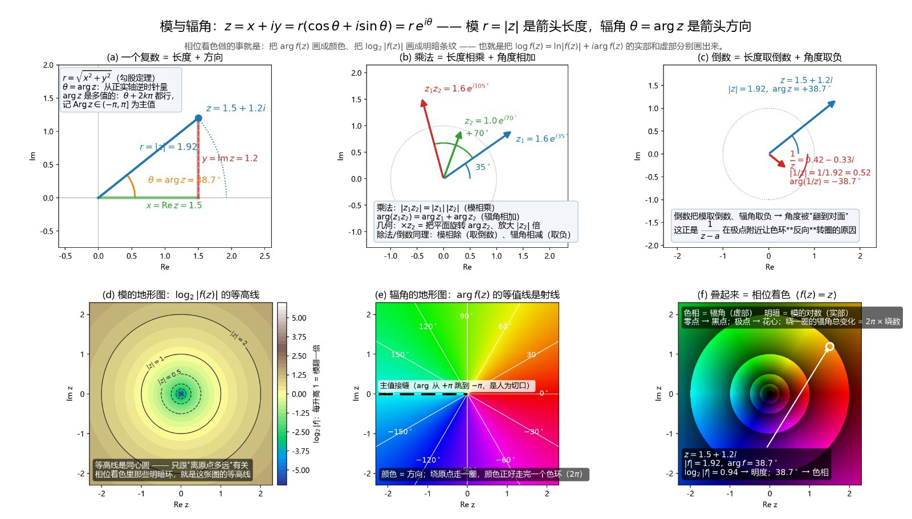

乘法 = 模相乘，角度相加
|zw| = |z||w|，Arg(zw) ≡ Arg z + Arg w（mod 360°）。主辐角结果要折回 (−180°, 180°]。
将复数拖到复平面的任意位置，观察乘法怎样缩放并旋转、倒数怎样取模的倒数并反转角度。再用颜色同时观看整个复平面。
从正实轴逆时针量角为正。这里用主辐角 Arg z ∈ (−180°, 180°]；原点的辐角、倒数和 log₂|z| 都没有定义。下方的颜色图是 f(z)=z 的教学可视化。
也可在下列数值框输入。w 以模和角度表示，默认值对应原图的乘法示例。
三张图都显示 −2.2 ≤ Re z, Im z ≤ 2.2。点击图中位置会同步选中上方的 z；图中白色小圈标记当前点。
每向外跨过一个标记圆，|z| 翻倍：0.5、1、2。原点没有对数值。
同方向的射线同色。沿负实轴存在主辐角从 +180° 到 −180° 的跳变。
色相编码辐角，明暗条纹编码 log₂|z|。彩色环是人为设计的图例，不是函数的额外性质。
z = x + iy；水平是实部，竖直是虚部。
|z| 固定时是一条以原点为圆心的圆。
Arg z 固定时沿原点向外延伸；原点本身无方向。
|zw| = |z||w|，Arg(zw) ≡ Arg z + Arg w（mod 360°）。主辐角结果要折回 (−180°, 180°]。
z ≠ 0 时，|1/z| = 1/|z|，Arg(1/z) ≡ −Arg z（mod 360°）。也可用共轭计算 1/z = (x − iy)/(x²+y²)。
复对数的一个值可写为 ln|z| + i Arg z；所有值还相差 2πki。图中的 log₂|z| 只画实数模的底 2 对数。

原图：用户本次提供的 1600 × 911 PNG。点击可查看原尺寸。
原图对 1.5 + 1.2i 标注 |z|≈1.92、Arg z≈38.7°，这些与计算一致。
原图把倒数写作约 0.42 − 0.33i。按共轭精确计算，1/(1.5+1.2i) = (50−40i)/123 ≈ 0.40650 − 0.32520i；实部按两位小数应是 0.41。此页采用计算结果。
原图中乘法采用另一个独立示例 z₁=1.6ei35°、z₂=1.0ei70°。交互区默认的 z 是 1.5+1.2i，因此其 zw 不会等于原图的 1.6ei105°。
域着色颜色来自页面定义的色相和明暗映射；数值核验见 本专题说明。